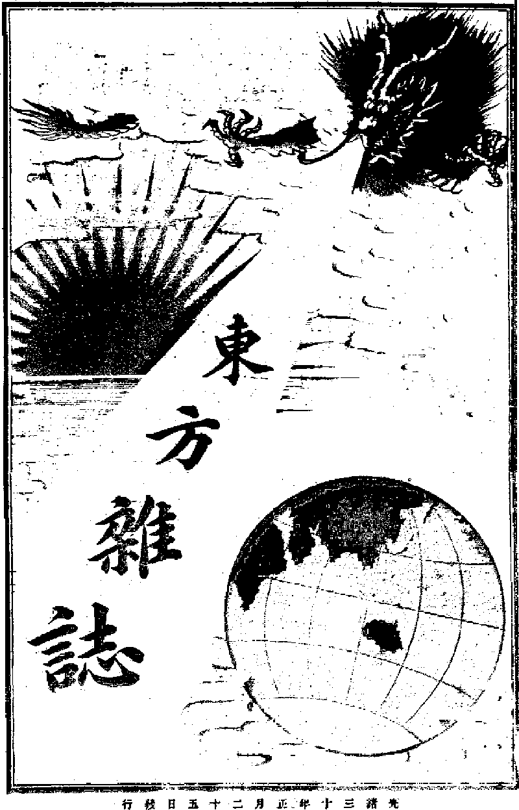
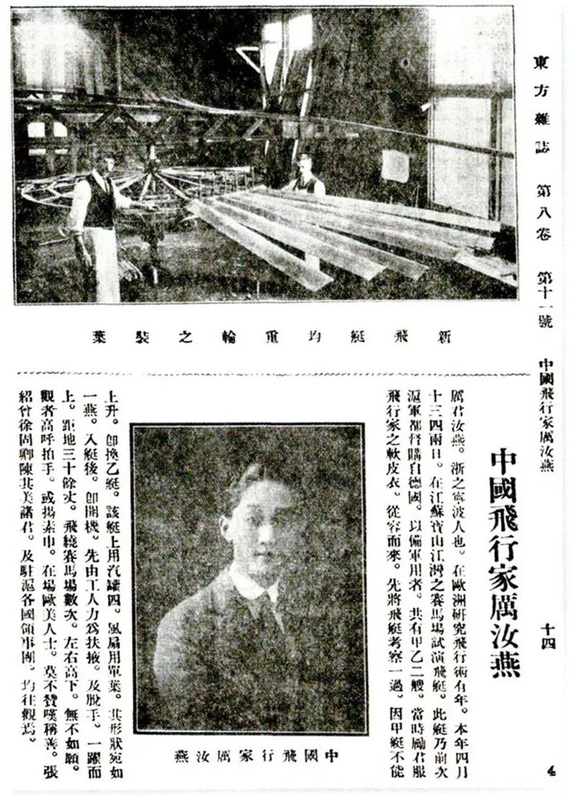

第 26 章
替身的伦理
《东方杂志》第六卷第十一期送到读者手中那年，北京已经入冬。刊物翻开，罗振玉的名字列在目录页上，连着两篇——《敦煌石室书目及其发现之原始》和《莫高窟石室秘录》。那些文字排版紧密，没有一张图版。读者只能靠句子去想象藏经洞里堆积如山的写经卷子、绢画和绣像。
密室已空了大半。斯坦因的二十九口大木箱正在运往伦敦的途中，伯希和在巴黎展开了他的精选写本。北京的学者们捧着手里的杂志，试图透过一份清单触碰到那些从未得见的面孔和笔触。那份清单就是最初的替身：当实物不可即时，文字接管了它的在场。
此后一个多世纪，这种接管反复上演。拓片、黑白照片、石膏翻模、手工临摹、三维激光扫描、数字建模、高精度3D打印——替身的形态不断升级。今天你在龙门石窟奉先寺可以看到复制佛首，原件在东京国立博物馆。你在天龙山第21窟能见到一尊3D打印菩萨头像，原件在纽约大都会艺术博物馆。
你在敦煌莫高窟第285窟的虚拟漫游系统中可以凑近壁画的每一条轮廓线，而洞窟本身正因为二氧化碳浓度被限制开放。替身从来不缺种类。它们无声地占据了佛龛、展柜、屏幕，承担起解释、展示乃至抚慰的职责。
然后一个问题浮了出来：当替身足以满足观看、研究与寄托情感的需要时，追索原件回归还有什么紧迫性。这不是技术问题。它是伦理问题。要掂量这个问题的分量，最好从复制最初的朴素形态开始。二十世纪五十年代，一支调查组抵达吐鲁番的柏孜克里克千佛洞。
带队的是北京大学教授阎文儒。他们在崖壁上工作了一个夏天——测绘、编号、拍照、抄录题记，给每一方壁画残片和每一尊残像建立档案。洞窟那时候的模样，调查日记里用了一句话：“满目疮痍，肢体不全。”
勒柯克世纪初用狐尾锯切走壁画后留下的矩形空白还在。斯坦因用麻布糊取泥皮卷走的供养人像留下的疤痕还在。日本大谷探险队剥离后暗色岩壁上浅淡的印痕还在。风沙、雨水、人为刻画加在一起，洞窟在加速衰老。


阎文儒他们做的事，是在这一切发生了之后，给面目模糊的东西留下纸面上的存照。那些手绘线图、黑白照片和文字记录，是洞窟在遭受剥离与风化后的遗体报告。此时的复制伦理指向清晰：为正在消失之物立此存照，替无法留住的现场留下一份守规矩的描述。同一时期的敦煌做着近似的事。常书鸿领着国立敦煌艺术研究所的人跪在洞窟里临摹壁画——毛笔，矿物颜料，高丽纸，一寸一寸描。
冬天手背长满冻疮，夏天汗水渗进画面。他们的工作首要目的不是复制，是留存。当时的莫高窟没有防护门。流沙从崖顶往下灌。裂缝在壁上延伸。烟熏和酥碱侵蚀着颜料层。临摹品是危急关头的权宜之计：如果原物注定毁坏，至少留下影像。这些临摹品后来被运到北京、上海、东京、巴黎展出。
有意思的事情发生了。观众站在常书鸿临摹的萨埵太子本生图前，或者史苇湘临摹的观音像前，心里知道这是转译。毛笔和纸本无法复现壁画表面的颗粒质感、墙面呼吸形成的漫漶、一千年前画工笔尖的颤动。他们接受它作为替代物，承认它只是索引。
这种承认构成一种默契：替身保持谦逊，不僭越原作的权威。默契在技术可以制造等身等色等肌理的完美复制品时松动。2010年代前后，浙江大学文化遗产研究院启动了一个项目。团队用自主开发的三维扫描设备对云冈石窟第3窟、第12窟、第18窟进行高密度数据采集。点云精度达到亚毫米级。数据输入数控机床，机械臂在五轴联动下走刀。
一整块砂岩被逐层雕削——佛衣的每一道褶皱，菩萨面容的每一根弧线，弟子手掌的每一节骨节，都从石头里释放出来。成品运回云冈，安放在展厅里。参观者可以绕行观看，甚至伸手触摸。真窟里不行，人的呼吸和皮肤油脂太危险。一位研究院负责人对媒体解释，这批复制品的目的是为大量游客提供“替代性体验”，给真窟减负。
天龙山也在做类似的事。2016年，太原市文物局联合芝加哥大学、太原理工大学启动“天龙山石窟数字复原国际巡展”。核心思路是用流散海外佛首的三维扫描数据，与国内洞窟残存佛身数据做虚拟拼合，再通过3D打印制作等比例的合体雕像。
2019年，一尊第21窟北壁菩萨坐像复制品出现在开罗国际数码艺术节上。佛首原件在纽约大都会艺术博物馆，佛身在山西天龙山。数字拼合完成得干净利落——颈部断面和切割线严丝合缝，好像上世纪二十年代那场盗凿只是一个可以撤回的操作。如果事情只停留在“数字拼合”和“虚拟展览”的层面，许多伦理纠结或许不会那么尖锐。
但实体复制品开始进入佛龛本身。2021年，一尊3D打印佛像被安放到龙门石窟古阳洞北壁的空龛里。原件是北魏释迦牟尼像，上世纪三十年代被盗凿，辗转落入日本某私人收藏。复制品由当地文保部门联合高校制作，数据来自藏家所在博物馆提供的三维扫描。
打印材料是树脂混合石粉，表面喷涂矿物颜料，色调追摹周围岩壁的砂黄色。从两三米外看去，它几乎就是洞窟原本的一部分。走近看，佛面微笑、衣纹转折、手脚比例与原件高度一致。只有把眼睛凑到二三十厘米以内，沿佛颈弧度仔细辨认——假如可以触碰——才能摸到打印层之间微弱的阶差。
那是0.1毫米量级的纹理，像皮肤上最细的皱褶。它们不是古代工匠的凿痕，而是当代打印机头往返叠加的证据。数字模型被切成了数万个水平薄层，每层的厚度精确到发丝的几分之一。在层与层的过渡处，仍存着肉眼几乎无法察觉的微小错位。技术完美中的不完美痕迹。
这尊佛像端坐在千年前的佛龛里。窟内自然光从洞口斜射进来，光线铺过表面，色泽温润，比例庄重。不知道它是一尊替身的人，完全可以把它当作原貌重建。很多游客确实不知道。他们拍照，合十，按导游提醒绕佛三匝，功德圆满。没人告诉他们，那是一尊打印出来的菩萨。问题就在这里。
龙门石窟研究院的项目说明中用了一个词：“原境展示”。意思是原件虽不在，但通过高精度复制，可以还原文物在原始空间中的视觉效果和文化氛围。这个说法在文物保护界并不罕见。德国新博物馆在修复柏林轰炸后的埃及藏品展厅时用过“原样复建”理念——大量缺失的雕塑和浮雕用浅色石膏填补，材质差异明显，以此标示新旧之别。但在龙门的例子里，区别几乎不存在。
替身的颜色、尺寸和质地都刻意追摹原石，没有任何标识性区分。游客分辨不出真假，不是缺乏眼力，而是替身的设计目标本来就是消除差异。这种消除有可理解的动机：原属地渴望完整。从上世纪二十年代至今，龙门被盗凿或毁坏的佛头超过二百六十尊。
一些佛身还在龛里，佛首已经散落在海外。洞窟在物理意义上是破碎的。附近居民的回忆也是破碎的——老人还能指认当年佛头被砸的具体位置，讲述运送的队伍走了哪条山路。让复制品住回空龛，是想缝合那道切口，也是在地方社区的情感期待里为消失的面孔招魂。
龙门边上的村民，有几位年长者曾被请去观看复制佛首的安装过程。一个老人后来对记者说，小时候听爷爷讲，佛头是被人“光着膀子”敲下来的。现在回来了，假的也好，心里好受些。好受些——这个说法朴素地揭示出替身在情感维度上的合法性。物理回归遥遥无期，复制品的在场至少提供了一种疗愈。它不像照片或影像那样只是二维提示。
它占据空间，有体积，有重量，挡住洞窟下方吹来的风，在烛火或灯光里投下与原作相同的轮廓。对每天生活在洞窟阴影里的社区居民来说，这种在场不是无足轻重的安慰。
但伦理麻烦并不因情感需要的正当性而消失。恰是在“情感疗愈”起作用的地方，替身开始跨越本来的边界。替身最初的任务是“指示”——它是一个索引，指向一件不在场的原件。罗振玉的目录指向藏经洞的经卷。阎文儒的图纸指向柏孜克里克的残壁。常书鸿的临摹指向莫高窟日渐剥蚀的原壁。
这些例子里，替身和原件之间的距离是明显的，也恰恰是这种距离维系着原作的权威：观众知道自己看的是替代物，因此不会停止寻找原件。替身谦逊地承认次要地位。
但高精度实体复制改变了这种关系。当替身在视觉上和原件无法分辨，它就不再是索引，而成为代理。代理和索引不同：它不指向别处，它说“我就是”。对多数非专业观众而言，龙门古阳洞那尊打印佛像就是他们经验中的“北魏佛像”。他们不会进一步追问原件在何处、被谁收藏、为何不能回来。
追问的门槛被替身的完美封堵了。这种封堵的第一个后果，是回归诉求的紧迫性被稀释。一尊高精度复制品已经在佛龛里坐稳，日夜接受香火与朝拜，满足了原属地的情感需要和旅游经济的展示需求——那么让原件回来的动力还剩多少。不是完全无人追问，而是追问的理由变得微妙。
博物馆可以据此声称“已经提供了完整替代方案”。地方政府可能更愿意投钱建设数字体验馆，不是启动漫长昂贵的跨国追索。公众也可能渐渐习惯——看一眼家门口的打印佛头，毕竟比办签证买机票去纽约看原件便宜得多。替身在不经意间从权宜之计变成正式方案，从补充变成补偿，从无奈之选变成主动安排。这种滑动不包含阴谋。它是一系列合理决定顺理成章累积出的结果。
但结果本身值得审视。因为当替身取代原件成为日常观看的载体时，那个被封堵在远方的原件开始承受一种新型的沉默。在纽约大都会艺术博物馆二楼中国佛教艺术展厅里，天龙山第21窟的菩萨头像被安置在独立的玻璃柜中。柔光从上方打下来，照亮低垂的眼帘和微微上翘的嘴角。
那张脸是北齐年间一个不知名工匠用一整块砂岩雕出来的。砂岩表面经过约一千四百五十年的风化，眉弓和鼻翼两侧留下了微小晶粒脱落的痕迹。这些痕迹在博物馆灯光下呈现柔和的哑光质感。
说明牌写明了出土地点、年代和捐赠人。没有写的是它当年怎样离开洞窟。如果此刻在天龙山第21窟那具无头佛身上，正坐着一尊3D打印的佛首复制品——事实也确实如此，2020年后窟内安置了一尊基于纽约原件扫描数据制作的聚酯复制品——那么在谁的观看经验中，才算看见了这尊佛像。这个问题并不像初看那样玄奥。
一个在西雅图工作的建筑师周末走进大都会206展厅，在菩萨头像前站五分钟，获得某种关于北齐造像的认识。一个山西本地中学生在学校组织的研学旅行中走进第21窟，抬头看见佛身上方那尊浅灰色树脂打印的佛首，也获得某种认识。两种认识指向同一个对象吗。表面看是的——它们基于同样的三维形态，接近同样的尺寸和比例。
再往下走一层，前者面对面的是那块六世纪采石场的具体石头，后者面对的是数万个聚酯薄层叠加出的当代工业产品。两者的区别不止于物质，也是伦理的。前者携带着不可复制的历史痕迹——包括被暴力切割的颈部断口。后者抹除了那道切割痕迹。
扫描数据在建模时自动填补了断面附近的缺失，使得打印佛首可以平滑安装到残存佛身的接口上。替身不仅替代了原作的视觉形象，也替代了它的受难史。
那道暴力在技术修复的逻辑里被遮蔽了。这就牵引出本章最尖锐的诘问：如果替身足以满足观看、研究乃至情感的需要，人们还能不能、还要不要保留关于那道切口的记忆。或者说，替身有没有可能不仅替代了原作的在场，也替代了人们对失去原作这件事的记忆。文物保护界内部对此的态度是分裂的。支持高精度复制品广泛使用的一方，论点并不虚弱。
他们大致从两个方向出发。其一，保存现状的不可逆性。天龙山许多佛首离开原窟已近百年，所在国博物馆持有合法收藏凭证。
无论这些凭证道义上存在多大争议，现行国际法律框架下强制追索的可能性很低。与其让佛龛永远空着，不如用技术实现视觉的完整。其二，受众的最大化。一个在山西腹地务农的老人也许一辈子去不了纽约。
但他可以在村口石窟里看见一尊等比例等色泽的复制佛首。这种文化权益的普及，本身也有道义正当性。柏孜克里克千佛洞的壁画残片躺在柏林亚洲艺术博物馆的恒温恒湿库房里，吐鲁番本地居民看不到。2010年代后，一些机构尝试把德国保存的壁画数字影像投影到洞窟空白墙面上，让游客在原境看见近似的复原。
方案获得了不少当地人的肯定。一位吐鲁番文物局工作人员在座谈会上说，游客大老远来了，不能只让人家看土墙。有投影，至少知道这里头原先是啥样，心里有个念想。这话里的实践智慧不能轻视。在理想状态里，原件应该回到原境——可如果原件在可见的未来都回不来，那么让留在家门口的人透过某种近似影像“知道原来是什么样子”，难道不是一种基本文化权利的实现。
对无力负担跨国旅行的当地居民来说，替身是他们与祖先遗产之间唯一的联系。另一方从伦理层面反驳。切入点恰好是“念想”。中国文物学会一位前负责人在内部研讨会上谈过，当投影或复制品持续替代原件存在于原境，人们慢慢就会忘记原件不在这里这回事。
“丢失感”本是推动追索的社会动力来源。一旦空白墙面被填上——不管填进去的是投影还是打印品——刺痛感就减弱。刺痛感减弱，社会关注度和资源投入就往下走。追索最后变成一个只有少数专家还关心的议题。
这个论点的洞察力在于，它不把替身当作中立的技术工具，而是将其理解为重塑集体记忆的力量。记忆不只靠信息储存，也依赖特定的情感触发机制。缺失感——看着空龛、空白墙、断头佛身时涌起的那种不适——是历史记忆的重要维系方式。空不是单纯的零，而是一个强有力的负号。
它提示曾经有什么存在过，又被剥夺了。替身填充了负号的位置，把缺失转化成在场。这个过程在满足观看需求的同时，也悄悄解除了记忆的痛苦驱力。两方说法都有道理。
伦理困境的真正硬度在于，两条理路指向的善彼此冲突。让本地居民有东西可看是一种善。保持对历史不公的记忆力以推动正义实现，也是善。两种善在这个具体场景里无法兼得。还有一个更细微的层次。
替身的伦理风险不仅在于可能让人忘记原件不在，也在于可能重塑人们对原件的理解方式。拿云冈石窟第12窟那尊等比例砂岩复制品来说。复制品安装在光线明亮的展厅里，四周没有岩壁的压迫感，顶上没有自然光的渐变，空气里没有湿度带来的凉意。
观众可以绕着它走一整圈，从正面、背面、侧面、上面五个角度欣赏细节。这种体验在原窟里不可能实现——原窟幽暗狭长，观众只能站在甬道上仰视佛、菩萨和伎乐天的阵列，视线方向被建筑结构严格限制。复制品提供了一种比原件更“易读”的视觉通道。一位建筑系教授观摩后写评论，称这尊复制品为“被解放的佛像”——从洞窟的建筑束缚里解放出来，进入可以全面审视的自由空间。说法很快引发争议。
一位考古学者回应说，佛像的设计起点就是洞窟建筑空间的一部分，脱离那个空间就不再是原来的作品了。所谓“解放”其实是一种剥离。复制品提供的“更完整信息”是一个认知陷阱——它让你以为看到了比原件更多的东西，实际看到的只是一个抽离了原境的剖面。这个争论揭示出替身运作的深层机制：替身不只是复制原物的形状，它也改变了观者与原物之间的空间关系、光线关系、身体位置。
这些关系的总和正是“在场”的构成要素。本雅明1936年那篇著名文章里说的“灵光”——艺术作品的此时此地性——不单附着在作品的物质实体上，也附着在观看者与作品共同占据的那个特定时空里。云冈第12窟的原境里，观众站在甬道阴影中，仰头看见佛的高肉髻上方恰好有一缕从明窗泻入的光。那是某一时刻的云冈才有的光。
这种经验无法被扫描数据采集，也无法被打印复现。替身能运输形状，但不能运输位置。能模拟质感，但不能复现风。那么能不能据此认为替身根本不是艺术品，只是个教学工具。
这种过于斩截的区分恐怕也有问题。天龙山那尊菩萨头像的3D打印品，很可能在五十年或一百年后自己变成一件有历史价值的对象。它记录的是二十一世纪初数字保护运动的技术水平、审美选择和伦理妥协。一旦原件在某个不可预知的事件里损毁——火灾、地震、战争——这尊替身可能成为后世理解原作风貌的主要依据。到那时候，它已经从“复制品”在事实上转化为“原始资料”。
这种身份切换不是遥远的思想实验。许多欧洲中世纪教堂壁画，原件早已在宗教战争和改建中毁失。我们今天所依据的样貌，相当程度来自十九世纪修复者留下的摹本。那些摹本当年不过是资料记录，如今却成了权威的视觉来源。
替身的这种“晋升前景”把事情往深处又推了一层。如果复制品可能在未来获得准原件的地位，那么制作复制品时的每一个技术选择——选哪种色调的砂岩更接近原件，凹凸感的程度要不要在打印时略微强化以便在展示厅灯光下显出立体感——就不再是单纯的技术参数，而是在塑造未来世代认知这些文物的起点。
这就引出第二个现实层面的伦理困境：谁有权做这些决定。眼下，大部分高精度三维扫描数据掌握在海外收藏机构手中。大都会艺术博物馆、东京国立博物馆、吉美博物馆、大英博物馆、柏林亚洲艺术博物馆——这些机构拥有天龙山、龙门、响堂山、敦煌等流散文物的实物与数据。中国文保机构要进行复制或复原，必须向它们申请数据共享。有时候申请被同意，有时候附带条件，有时候被拒绝。
2018年，一项针对流散天龙山佛首的全球扫描计划试图从某欧洲博物馆获取三尊佛首的数据。对方起初同意合作，后来以版权和数据安全为由推迟交付。直到项目方承诺“仅用于学术研究，不用于实体复制品的商业流通”，数据才最终释放。这个承诺本身说明了一件事：数据已经是一种权力。谁控制扫描数据，谁就控制着替身的生产——进而控制着原境的解释权。
山中商会在上世纪二十年代组织盗凿天龙山石窟时，用的是锤子、凿子和本地招募的壮工。今天控制复制品生产的工具是服务器里的算法和数据使用协议。
暴力的形式变得文明了，可权力不对称的结构大致保留了下来。这也是为什么一些学者开始主张，原属国应当优先获取本国文物的数字化主权——扫描的第一手数据理应由中国机构掌控，而不是依赖海外博物馆的分享。这种主张在国际博物馆协会现行伦理框架下遇到阻力。框架倾向于将数据视为藏品的延伸，归收藏机构管理。伦理性争论至今未歇。
回到器物层面来。2022年秋，香港一场小规模佛教艺术专拍上，出现了一件天龙山风格的砂岩菩萨头像。拍卖图录的描述很讲分寸：除了尺寸、石质和大致年代，还特别注明“附有原窟三维扫描数据光盘与数字文件访问权限”。这行备注在图录里排得比平常的出处说明还要显眼。
拍卖前，收藏圈里有种说法在流传——附上扫描数据可以减轻买家对“破坏原境”的道德压力，因为买下的不只是一件残件，连同数据也在支持研究机构做数字复原。这件拍品的估价在开拍前被调高两次，最终以高出估价上限近三成的价格成交。这个结果引来多方不同解读。
拍卖行把这看作市场对“负责任收藏”的认可。一位参与竞拍的匿名买家通过代理人表示，出高价不仅因为佛首本身的艺术水准，还因为附带数据让它具备了“文化回馈的象征意义”。几位一直追踪文物流通问题的学者则在私下讨论时表达了不安。他们担心的逻辑链条是这样：如果市场上附有数据授权的流失文物能拿到更高价格，那么市场就创造出了一种新的合法性框架。
在这个框架下，收藏行为不再只是对一个物质残件的占有，而升格为“协助数字重聚的文化善举”。一旦这套逻辑被普遍接受，流散文物的持有者就可以通过分享数据来对冲追索压力。法律意义上的所有权不但没被动摇，反而因为数据分享的道义增信变得更稳固。
这种担心不是杞人忧天。在某些国际博物馆的专业讨论里，已经有策展人用“守护者”替代“物主”来称呼自己。这个修辞转换暗含的意思是：海外收藏机构不再是争议文物的持有者，而是替全人类守护它的受托人。
既然是受托人，通过数字化手段把替身送回原境就是一种尽责表现——而原件本身的物理位置反而不是核心议题了。这套说法的周密处在于，它吸收了追索方的一部分主张——原属社区有权获得文化接近性——然后把解决方案从“归还原件”替换为“提供替身”。替身成了这套方案中的关键润滑剂。
此刻，距离罗振玉在《东方杂志》上刊出那份替代实物的目录，已经过去一百一十多年。当年他用文字做的事，今天有人用激光点云和聚酯树脂在做。文本目录、黑白照片、石膏翻模、手工临摹、三维扫描、虚拟现实、高精度打印——替身的形态在变，替身的伦理重量也在累积。起初，替身只是不得已的记录手段。它知道自己不是原件，也无意冒充原件。
接着它升级为展示工具，在博物馆里扮演教育者角色，仍然保持谦逊的距离。再往后，技术逼近完美，替身开始进入原境，坐上佛龛，接受香火，承受目光，并在这个过程中不动声色地改变了观看者与原作之间的关系。
它填充了空的位置，缝合了断裂的历史外观，却也可能封堵了追问断裂原因的路径。这不是要得出“所以应当禁止复制”的结论。那样的结论太轻巧，也毫无操作意义。替身不会因为伦理困境就停止被制造和使用。云冈石窟的游客压力逐年增长，已逼近单日承载上限。用复制品分散客流不是选择之一，是必须做的事。
天龙山的佛龛空了近百年，地方社会对完整的渴望是真实的、每天都在累积的情感现实。否认这些需求的真实性，同样是一种道义上的傲慢。问题不是要不要替身，而是在大量制造和使用替身的同时，怎么保持一种清醒——不把替身和原件混为一谈的清醒，让替身承担解释功能但不让它僭越原作记忆位置的清醒。这种清醒之所以难维持，是因为替身的逻辑恰好通向混淆。它追求完美的方向就是消弭与原件的差异。
技术每一次进步——从毫米精度到亚毫米，再到微米——都在强化替身的说服力。说服力越强，观众越可能把替身当原件来接受。接受一旦发生，认知就被重新校准。
那个远在海外库房里的真件，变成某种理论上、抽象上的存在——你知道它在，可你的身体、你的眼睛和你的情感全都在和替身打交道。印刷所的车间里，技术员做完了最后的质量检查。仿砂岩表面的菩萨头像躺在包装箱里，周围填满防震泡沫。箱盖合上，搬运工把它抬上货车。长途运输的终点是北方某石窟的陈列馆。同一时刻，四千公里外，柏孜克里克崖壁上那些被切割后留下的矩形凹槽中，夕阳正灌入橙红色的光。凹槽的边缘依旧锋利——狐尾锯的印痕，在百年风沙的摩挲之后，仍然保持着人工暴力的清晰轮廓。一个替身正在路上。而空白本身也是一件展品。